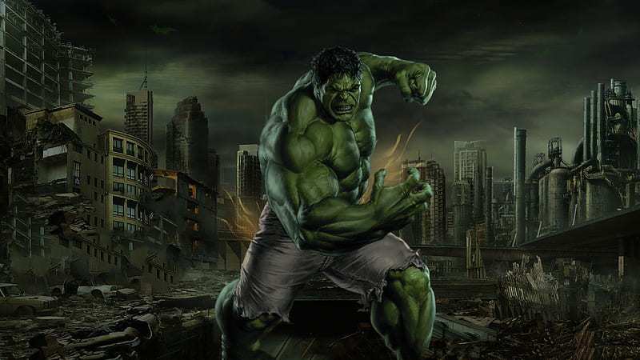

The Hulk is a superhero appearing in American comic books published by
Marvel Comics. Created by writer Stan Lee and artist Jack Kirby, the character first appeared in the debut
issue of The Incredible Hulk (May 1962). In his comic book appearances, the character, who has dissociative
identity disorder (DID), is primarily represented by the alter ego Hulk, a green-skinned, hulking and
muscular humanoid possessing a limitless degree of physical strength, and the alter ego Dr. Robert Bruce
Banner, a physically weak, socially withdrawn, and emotionally reserved physicist, both of whom typically
resent each other.